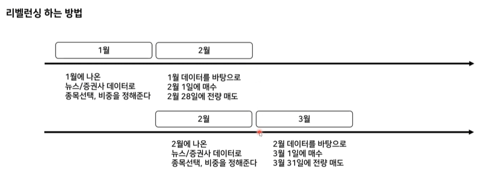
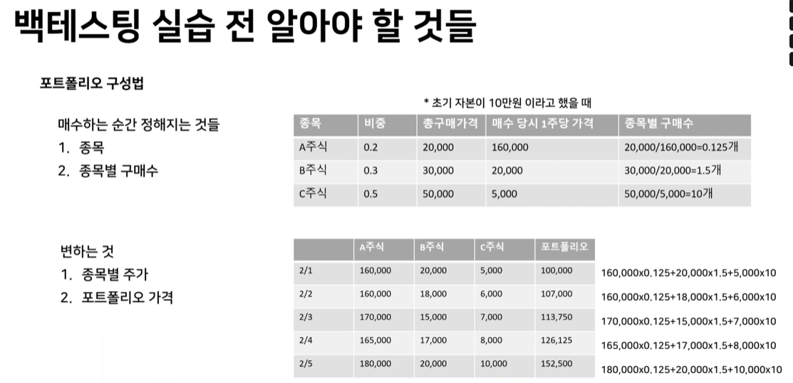
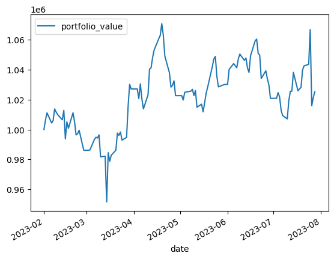

# 데이터 불러오기
import pandas as pd
final_news_scores = pd.read_csv('4_3_데이터/final_news_scores.csv')
final_reports_scores = pd.read_csv('4_3_데이터/final_reports_scores.csv')
final_news_scores["date"] = pd.to_datetime(final_news_scores["date"])
final_news_scores["month_date"] = final_news_scores["date"].apply(lambda x: x.strftime("%Y-%m"))
final_reports_scores["date"] = pd.to_datetime(final_reports_scores["date"])
final_reports_scores["month_date"] = final_reports_scores["date"].apply(lambda x: x.strftime("%Y-%m"))GPT활용강의 내용정리 - 백테스팅 실습
개요
- GPT활용교육을 들은 내용을 별도로 정리
- 1일차 : 네이버API 활용 : GPT를 활용한 변수 분석 등
- 2일차 : beautifulsoup활용한 뉴스 및 증권사리포트 크롤링
- 3일차 : 뉴스 및 증권사리포트 데이터 전처리
- 4일차 : 감성점수 변환
- 5일차 : 백테스팅 실습
- 상위종목추출 & 비중설정 - 리밸런싱 - 평가지표 순으로 진행
5일차 실습내용 정리
실습 : 상위 20/25%인 종목 추출하기
- GPT에 데이터프레임명과 아래와 같은 프롬프트, 데이터를 함께 제공
퀀트 투자 백테스팅을 위해 종목을 선정하고 포트폴리오의 비중을 결정하는 Python 코드를 작성해 주세요. 이때 사용하는 데이터는 다음과 같이 생겼습니다.
데이터프레임 이름은 final_reports_scores입니다.final_reports_scores[['company', 'ticker', 'date', 'month_date', 'positive_score', 'negative_score', 'neutral_score']].head(5)| company | ticker | date | month_date | positive_score | negative_score | neutral_score | |
|---|---|---|---|---|---|---|---|
| 0 | LG에너지솔루션 | 373220.KS | 2023-01-31 | 2023-01 | 0.70 | 0.15 | 0.15 |
| 1 | 삼성SDI | 006400.KS | 2023-01-31 | 2023-01 | 0.65 | 0.15 | 0.20 |
| 2 | 삼성SDI | 006400.KS | 2023-01-31 | 2023-01 | 0.75 | 0.10 | 0.15 |
| 3 | 삼성중공업 | 010140.KS | 2023-01-31 | 2023-01 | 0.65 | 0.25 | 0.10 |
| 4 | SGC에너지 | 005090.KS | 2023-01-31 | 2023-01 | 0.70 | 0.10 | 0.20 |
- GPT에 아래와 같은 프롬프트를 제공하여 함수 코드 작성
주어진 month_date 값을 기준으로 특정 월의 데이터만 필터링한 후, 동일한 company가 여러 개 등장할 경우 positive_score, negative_score, neutral_score의 평균을 계산하여 하나의 데이터로 병합하는 코드를 작성해 주세요.
- 입력값(input)
month_date (예: '2023-01')
상위 몇퍼센트를 사용할 것인지 (예:0.25)
- 처리 과정
month_date 값과 일치하는 데이터만 필터링합니다.
동일한 company(회사명)에 대해 positive_score, negative_score, neutral_score의 평균을 구하여 하나의 레코드로 변환합니다.
- 출력값(output)
가공이 완료된 DataFrame# 데이터프레임을 넣으면 지정한 상위 %에 해당하는 결과 데이터프레임을 주는 함수 작성
def filter_and_aggregate(final_reports_scores, month_date, selection_ratio=0.25):
"""
특정 month_date 데이터를 필터링하고, 동일한 company의 점수들을 평균 처리하여 반환.
Parameters:
- final_reports_scores (DataFrame): 종목별 점수 데이터
- month_date (str): 필터링할 월 (예: '2023-01')
- selection_ratio (float): 상위 몇 % 종목을 선택할 것인지 (기본값 25%)
Returns:
- filtered_df (DataFrame): 가공이 완료된 데이터
"""
# 특정 month_date 값 필터링
filtered_df = final_reports_scores[final_reports_scores["month_date"] == month_date]
# 동일한 company에 대해 점수 평균 계산
aggregated_df = (
filtered_df.groupby("company", as_index=False)
.agg({
"ticker": "first", # 동일한 회사일 경우 대표 ticker 선택
"positive_score": "mean",
"negative_score": "mean",
"neutral_score": "mean"
})
)
# 상위 selection_ratio 비율 종목 선택 (positive_score 기준)
top_n = int(len(aggregated_df) * selection_ratio)
selected_df = aggregated_df.nlargest(top_n, "positive_score")
return selected_df# 예제 실행
month = "2023-01"
selection_ratio = 0.25
processed_data = filter_and_aggregate(final_reports_scores, month, selection_ratio)processed_data.head()| company | ticker | positive_score | negative_score | neutral_score | |
|---|---|---|---|---|---|
| 87 | 자화전자 | 033240.KS | 0.8500 | 0.0500 | 0.100 |
| 11 | JW중외제약 | 001060.KS | 0.8000 | 0.0500 | 0.150 |
| 73 | 아모레G | 002790.KS | 0.8000 | 0.0500 | 0.150 |
| 85 | 이수페타시스 | 007660.KS | 0.7750 | 0.0500 | 0.175 |
| 15 | KT&G | 033780.KS | 0.7625 | 0.0625 | 0.175 |
len(processed_data)33실습 : 종목비중을 설정코드 작성(균등 or 긍정점수 비중에 맞추기)
- GPT에 아래와 같은 프롬프트를 제공하여 함수 코드 작성
- 입력값(input)
df: 앞서 선정한 종목들의 DataFrame
method: 비중 결정 방식 ('equal' 또는 'score')
'equal': 모든 종목에 동일한 비중(1/N)을 부여합니다.
'score': positive_score 값을 기준으로 비중을 부여합니다.
- 처리 과정
'equal' 방식: 모든 종목의 비중을 동일하게 설정합니다 (1/N).
'score' 방식: positive_score 값의 총합을 기준으로 각 종목의 비중을 계산합니다.
- 출력값(output)
weight 컬럼이 추가된 DataFrame# 데이터프레임을 넣으면 지정한 방식(균등equal, score비중 반영)에 맞는 함수 코드
def assign_weights(df, method="equal"):
"""
선정된 종목들의 포트폴리오 비중을 결정하는 함수.
Parameters:
- df (DataFrame): 선정된 종목들의 DataFrame
- method (str): 비중 결정 방식 ('equal' 또는 'score')
Returns:
- df (DataFrame): weight 컬럼이 추가된 DataFrame
"""
if df.empty:
print("Error: 입력 데이터가 비어 있습니다.")
return df
if method == "equal":
# 동일한 비중 (1/N)
df["weight"] = 1 / len(df)
elif method == "score":
# positive_score 기준 가중치 계산
total_score = df["positive_score"].sum()
if total_score == 0:
print("Warning: positive_score 총합이 0입니다. 균등 비중을 사용합니다.")
df["weight"] = 1 / len(df)
else:
df["weight"] = df["positive_score"] / total_score
else:
raise ValueError("Invalid method. Choose 'equal' or 'score'.")
return dfweighted_portfolio = assign_weights(processed_data, method="score")weighted_portfolio.head()| company | ticker | positive_score | negative_score | neutral_score | weight | |
|---|---|---|---|---|---|---|
| 87 | 자화전자 | 033240.KS | 0.8500 | 0.0500 | 0.100 | 0.034818 |
| 11 | JW중외제약 | 001060.KS | 0.8000 | 0.0500 | 0.150 | 0.032770 |
| 73 | 아모레G | 002790.KS | 0.8000 | 0.0500 | 0.150 | 0.032770 |
| 85 | 이수페타시스 | 007660.KS | 0.7750 | 0.0500 | 0.175 | 0.031746 |
| 15 | KT&G | 033780.KS | 0.7625 | 0.0625 | 0.175 | 0.031234 |
실습 : 1달 동안의 수익률을 백테스팅
기초개념  
백테스팅 가정
- 주가는 일별 종가 기준으로 산정
- 매매 수수료 및 세금은 고려하지 않음
- 소수점 단위 구매가 가능하다는 가정
GPT에 아래와 같은 프롬프트를 제공하여 함수 코드 작성 (아래 샘플 데이터도 함께 제공)
Python을 사용하여 특정 시점에 포트폴리오를 구성하고 한 달 동안의 수익률을 백테스트하는 코드를 작성해 주세요.
요구 사항은 다음과 같습니다.
입력값(input):
- weighted_portfolio: 앞서 처리를 끝낸 DataFrame
company ticker positive_score negative_score neutral_score weight
87 자화전자 033240.KS 0.8500 0.0500 0.100 0.034818
11 JW중외제약 001060.KS 0.8000 0.0500 0.150 0.032770
73 아모레G 002790.KS 0.8000 0.0500 0.150 0.032770
- month_date (예: '2023-01')
- invest_amt: 초기 투자 금액 (예:1000)
포트폴리오 구성:
- 선택한 종목들을 month_date의 다음 월에 첫번째 날 (예: 2024-02-01)에 매수합니다.
- 종목별 투자 비율(weight)이 주어지며, 총 투자금(invest_amt)이 정해져 있습니다.
백테스트 진행:
- month_date의 다음 월에 첫번째 날(예:2024-02-01)부터 month_date의 다음 월에 마지막 날(예:2024-02-29)까지 해당 종목의 가격 데이터를 가져옵니다.
- 초기 매수 가격을 기준으로 종목별 매수 가능한 주식 수(shares_held)를 계산합니다.
- 일별 종목 가격 변화에 따라 포트폴리오의 총 가치를 추적합니다.
데이터 소스:
- yfinance 라이브러리를 사용하여 종목별 주가 데이터를 다운로드합니다.
출력:
- 기간 내 일별 포트폴리오 가치 변화를 반환해주세요.weighted_portfolio.head()| company | ticker | positive_score | negative_score | neutral_score | weight | |
|---|---|---|---|---|---|---|
| 87 | 자화전자 | 033240.KS | 0.8500 | 0.0500 | 0.100 | 0.034818 |
| 11 | JW중외제약 | 001060.KS | 0.8000 | 0.0500 | 0.150 | 0.032770 |
| 73 | 아모레G | 002790.KS | 0.8000 | 0.0500 | 0.150 | 0.032770 |
| 85 | 이수페타시스 | 007660.KS | 0.7750 | 0.0500 | 0.175 | 0.031746 |
| 15 | KT&G | 033780.KS | 0.7625 | 0.0625 | 0.175 | 0.031234 |
# 데이터프레임을 넣으면 앞서 요청한 구성과 백테스팅을 진행하는 코드
import pandas as pd
import numpy as np
import yfinance as yf
from datetime import datetime, timedelta
def backtest_portfolio(weighted_portfolio, month_date, invest_amt=1000):
"""
특정 시점에서 포트폴리오를 구성하고 한 달 동안 수익률을 백테스트하는 함수.
Parameters:
- weighted_portfolio (DataFrame): 선정된 종목과 비중 포함 데이터
- month_date (str): 포트폴리오 기준 월 (예: '2023-01')
- invest_amt (float): 초기 투자 금액 (예: 1000)
Returns:
- portfolio_value_df (DataFrame): 일별 포트폴리오 가치 변화
"""
# 투자 시작 날짜 설정 (다음 달 첫 거래일)
start_date = pd.to_datetime(month_date) + pd.DateOffset(months=1)
start_date = start_date.replace(day=1)
end_date = start_date + pd.DateOffset(months=1) - pd.DateOffset(days=1)
# 티커 리스트 가져오기
tickers = weighted_portfolio["ticker"].unique().tolist()
# 주가 데이터 다운로드 (시작 날짜부터 한 달간)
stock_data = yf.download(tickers, start=start_date, end=end_date, progress=False)["Close"]
# 첫 거래일 가격 (매수 가격) 설정
buy_prices = stock_data.iloc[0]
# 종목별 투자 금액 및 매수 주식 수 계산
weighted_portfolio["invested_amt"] = invest_amt * weighted_portfolio["weight"]
weighted_portfolio["shares_held"] = weighted_portfolio.apply(lambda row: row["invested_amt"] / buy_prices[row["ticker"]], axis=1)
# 일별 포트폴리오 가치 계산
portfolio_values = []
for date, row in stock_data.iterrows():
daily_value = (row * weighted_portfolio.set_index("ticker")["shares_held"]).sum()
portfolio_values.append({"date": date, "portfolio_value": daily_value})
# 결과 데이터프레임 생성
portfolio_value_df = pd.DataFrame(portfolio_values)
return portfolio_value_df# 예제 실행
month_date = "2023-01"
invest_amt = 1000
portfolio_result = backtest_portfolio(weighted_portfolio, month_date, invest_amt)YF.download() has changed argument auto_adjust default to Trueportfolio_result| date | portfolio_value | |
|---|---|---|
| 0 | 2023-02-01 | 1000.000000 |
| 1 | 2023-02-02 | 1003.766602 |
| 2 | 2023-02-03 | 1006.418088 |
| 3 | 2023-02-06 | 1000.696259 |
| 4 | 2023-02-07 | 1002.741804 |
| 5 | 2023-02-08 | 1011.224061 |
| 6 | 2023-02-09 | 1009.665215 |
| 7 | 2023-02-10 | 1008.266796 |
| 8 | 2023-02-13 | 1006.485368 |
| 9 | 2023-02-14 | 1011.019223 |
| 10 | 2023-02-15 | 994.953766 |
| 11 | 2023-02-16 | 1006.687273 |
| 12 | 2023-02-17 | 1001.675545 |
| 13 | 2023-02-20 | 1010.746386 |
| 14 | 2023-02-21 | 1004.240312 |
| 15 | 2023-02-22 | 995.407115 |
| 16 | 2023-02-23 | 999.085422 |
| 17 | 2023-02-24 | 999.706383 |
| 18 | 2023-02-27 | 987.528037 |
실습 : 리밸런싱하며 백테스팅
- GPT에 아래와 같은 프롬프트를 제공하여 함수 코드 작성 (아래 샘플 데이터도 함께 제공)
Python을 사용하여 특정 시점에 포트폴리오를 구성하고 매달 리밸런싱(rebalancing)하며 백테스트하는 코드를 작성해 주세요.
요구 사항은 다음과 같습니다.
백테스트 개요:
- date 리스트에 주어진 기간(예: ['2023-01', '2023-02', '2023-03']) 동안 매달 리밸런싱을 수행합니다.
- 초기 투자금(init_amt)이 주어집니다.
- 매월 말 포트폴리오의 최종 가치를 계산하고, 다음 달 투자금으로 사용합니다.
종목 선정 및 가중치 할당
- filter_and_aggregate를 사용해서 종목을 선택합니다.
- assign_weights를 사용해서 종목별 비중을 가져옵니다.
백테스트 진행:
- 첫 번째 달에는 init_amt(1,000,000원)으로 포트폴리오를 구성하여 백테스트를 수행합니다.
- 이후 매월 리밸런싱을 수행하며, 이전 달 말의 포트폴리오 가치를 다음 달 투자금으로 사용합니다.
- backtest_portfolio(select_stocks_df, date, invest_amt) 함수를 사용하여 해당 달의 포트폴리오 가치 변화를 계산합니다.
- 모든 기간의 결과를 저장합니다.
출력:
총 포트폴리오 가치 변화를 반환해 주세요.# 데이터프레임을 넣으면 날짜별로(주어진 기간) 백테스팅하는 코드
import pandas as pd
import yfinance as yf
from datetime import datetime
import time
def rebalancing_backtest(final_reports_scores, dates, init_amt=1000000, selection_ratio=0.25, weight_method="equal"):
"""
특정 시점에 포트폴리오를 구성하고 매월 리밸런싱하며 백테스트하는 함수.
Parameters:
- final_reports_scores (DataFrame): 종목별 점수 포함 데이터
- dates (list): 백테스트 수행할 월 리스트 (예: ['2023-01', '2023-02', '2023-03'])
- init_amt (float): 초기 투자금 (기본값: 1,000,000)
- selection_ratio (float): 종목 선정 비율 (기본값: 25%)
- weight_method (str): 비중 결정 방식 ('equal' 또는 'score')
Returns:
- total_portfolio_values (DataFrame): 기간별 포트폴리오 가치 변화
"""
portfolio_history = []
invest_amt = init_amt
for month_date in dates:
# 1. 종목 선정 및 가중치 부여
selected_stocks = filter_and_aggregate(final_reports_scores, month_date, selection_ratio)
weighted_portfolio = assign_weights(selected_stocks, method=weight_method)
# 2. 한 달간 백테스트 수행
time.sleep(30) # 짧은시간에 yfinance를 불러오면 오류가 생길 수 있으므로, 30초 동안 기다려주기
portfolio_result = backtest_portfolio(weighted_portfolio, month_date, invest_amt)
# 3. 마지막 날 포트폴리오 가치 추출 (다음 달 투자금으로 설정)
final_value = portfolio_result.iloc[-1]["portfolio_value"]
invest_amt = final_value # 다음 달 투자금으로 사용
# 4. 결과 저장
portfolio_result["month_date"] = month_date
portfolio_history.append(portfolio_result)
# 전체 결과 합치기
total_portfolio_values = pd.concat(portfolio_history, ignore_index=True)
return total_portfolio_values# 백테스트 실행
dates = ['2023-01', '2023-02', '2023-03','2023-04', '2023-05', '2023-06']
init_amt = 1000000
selection_ratio = 0.2
weight_method = "score"
total_result = rebalancing_backtest(final_reports_scores, dates, init_amt, selection_ratio, weight_method)total_result.head()| date | portfolio_value | month_date | |
|---|---|---|---|
| 0 | 2023-02-01 | 1.000000e+06 | 2023-01 |
| 1 | 2023-02-02 | 1.006297e+06 | 2023-01 |
| 2 | 2023-02-03 | 1.011152e+06 | 2023-01 |
| 3 | 2023-02-06 | 1.004343e+06 | 2023-01 |
| 4 | 2023-02-07 | 1.005958e+06 | 2023-01 |
total_result.plot(x='date', y='portfolio_value')<Axes: xlabel='date'>
실습 : 평가지표 계산
- GPT에 아래와 같은 프롬프트를 제공하여 함수 코드 작성
Python을 사용하여 포트폴리오의 성과 지표를 계산하는 함수를 작성해 주세요.
성과 지표 계산 항목:
- 누적 수익률 (Cumulative Return): 최종 포트폴리오 가치 대비 초기 가치의 증가율을 계산합니다.
- 연평균 수익률 (CAGR, Compound Annual Growth Rate): 전체 기간 동안의 연평균 수익률을 계산합니다.
- 최대 손실폭 (MDD, Maximum Drawdown): 백테스트 기간 동안 포트폴리오의 최대 하락폭을 계산합니다.
- 변동성 (Volatility, 연율화된 표준편차): 일별 수익률의 표준편차를 연율화하여 계산합니다.
- 샤프 비율 (Sharpe Ratio): 위험조정 수익률을 계산합니다. 무위험 이자율(risk_free_rate)은 기본적으로 0.02(연 2%)를 사용합니다.
- 승률 (Win Rate): 총 거래일 중에서 수익이 발생한 날의 비율을 계산합니다.
최종 결과는 각 성과 지표를 포함한 딕셔너리 형태로 반환해 주세요.# 평가지표 계산 함수
import numpy as np
import pandas as pd
def calculate_performance_metrics(portfolio_df, initial_investment, risk_free_rate=0.02):
"""
포트폴리오 성과 지표를 계산하는 함수.
Parameters:
- portfolio_df (DataFrame): 포트폴리오 가치 변화 데이터 (date, portfolio_value 컬럼 포함)
- initial_investment (float): 초기 투자금
- risk_free_rate (float): 무위험 이자율 (기본값: 2% 연율)
Returns:
- performance_metrics (dict): 성과 지표를 포함한 딕셔너리
"""
# 포트폴리오 가치 데이터
portfolio_values = portfolio_df["portfolio_value"]
dates = portfolio_df["date"]
# 일별 수익률 계산
daily_returns = portfolio_values.pct_change().dropna()
# 누적 수익률 (Cumulative Return)
cumulative_return = (portfolio_values.iloc[-1] - initial_investment) / initial_investment
# 연평균 수익률 (CAGR)
num_days = (dates.iloc[-1] - dates.iloc[0]).days
num_years = num_days / 252 # 평균 252거래일 = 1년
cagr = (portfolio_values.iloc[-1] / initial_investment) ** (1 / num_years) - 1
# 최대 손실폭 (MDD, Maximum Drawdown)
cumulative_max = portfolio_values.cummax()
drawdown = (portfolio_values - cumulative_max) / cumulative_max
max_drawdown = drawdown.min()
# 변동성 (Volatility, 연율화된 표준편차)
volatility = daily_returns.std() * np.sqrt(252)
# 샤프 비율 (Sharpe Ratio)
mean_daily_return = daily_returns.mean()
sharpe_ratio = ((mean_daily_return - risk_free_rate / 252) / daily_returns.std()) * np.sqrt(252)
# 승률 (Win Rate)
win_rate = (daily_returns > 0).sum() / len(daily_returns)
# 성과 지표 딕셔너리 생성
performance_metrics = {
"Cumulative Return": round(cumulative_return, 4),
"CAGR": round(cagr, 4),
"Maximum Drawdown": round(max_drawdown, 4),
"Volatility": round(volatility, 4),
"Sharpe Ratio": round(sharpe_ratio, 4),
"Win Rate": round(win_rate, 4),
}
return performance_metrics
# 예제 실행
initial_investment = 1000000 # 초기 투자금
performance_metrics = calculate_performance_metrics(total_result, initial_investment)# 백테스트 실행 (조건 변경하여 새로 진행)
dates = ['2023-01', '2023-02', '2023-03','2023-04', '2023-05', '2023-06']
init_amt = 1000000
selection_ratio = 0.2
weight_method = "equal"
total_result = rebalancing_backtest(final_reports_scores, dates, init_amt, selection_ratio, weight_method)# 평가지표 계산
performance_metrics = calculate_performance_metrics(total_result, initial_investment)
performance_metrics{'Cumulative Return': np.float64(0.0234),
'CAGR': np.float64(0.0334),
'Maximum Drawdown': np.float64(-0.0617),
'Volatility': np.float64(0.1534),
'Sharpe Ratio': np.float64(0.2678),
'Win Rate': np.float64(0.5763)}
Copyright © 2024 Kibok Park All rights reserved.